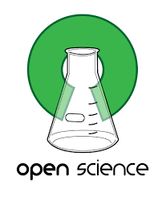

<!DOCTYPE html>
<html lang="en">
<head>
    <meta charset="UTF-8">
    <meta name="viewport" content="width=device-width, initial-scale=1.0">
    <title>EXAMEN_2EVAL</title>
    <link rel="stylesheet" href="examen_2eval.css">
    <link rel="preconnect" href="https://fonts.gstatic.com">
    <link href="https://fonts.googleapis.com/css2?family=Lato:ital,wght@0,300;1,300&display=swap" rel="stylesheet">  
</head>
<body>
    <header>
        <p></p>
        <nav>
            <ul>
                <li><a href="http://www.uisys.es/es/unidad-investigacion-social-y-sanitaria-UISYS" target="_blank"> HOME </a></li>
                <li><a href="http://www.uisys.es/es/opub/10/publicaciones" target="_blank"> PUBLICATIONS </a></li>
                <li><a href="http://www.uisys.es/Miembros.aspx" target="_blank"> WHO WE ARE </a></li>
                <li id="logoItem"></li>
            </ul>
        </nav>
    </header>
    <main>
        <article>
            <header>
                <hgroup>
                    <h1>The Emergency Medicine Facing the Challenge of Open Science</h1>
                    <h4 id="autorFecha">Andrea Sixto-Costoya <br> <i>Published: 25 March 2020</i> </h4>
                    <table>
                        <tr>
                            <td> </td>
                            <td> </td>
                        </tr>
                    </table>
                    
                    <h3>Abstract</h3>
                    <p id="abstract" class="fuenteGoogle"><b class="negritaAzul"> Background: </b>The availability of research datasets can strengthen and facilitate research
                        processes. This is specifically relevant in the emergency medicine field due to the importance of
                        providing immediate care in critical situations as the very current Coronavirus (COVID-19) Pandemic
                        is showing to the scientific community. This work aims to show which Emergency Medicine journals
                        indexed in Journal Citation Reports (JCR) currently meet data sharing criteria. <br> <b class="negritaAzul">Methods: </b>This
                        study analyzes the editorial policies regarding the data deposit of the journals in the emergency
                        medicine category of the JCR and evaluates the Supplementary material of the articles published in
                        these journals that have been deposited in the PubMed Central repository. <br> <b class="negritaAzul">Results: </b>It has been
                        observed that 19 out of the 24 journals contained in the emergency medicine category of Journal
                        Citation Reports are also located in PubMed Central (PMC), yielding a total of 5983 articles. Out of
                        these, only 9.4% of the articles contain supplemental material.</p>
                </hgroup>
            </header>
            <section>
                <h2>Method</h2>
                <p class="fuenteGoogle">This study was conducted in four phases. First, the websites of the 24 journals included in the
                    “Emergency Medicine” category of the 2016 Journal Citation Reports (JCR) were analyzed. Journals
                    were classified in quartiles according to the JCR ranking. This information was collected in May 2018.
                    According to our previous studies [15–17], the following data were retrieved from each journal: a)
                    journal title; b) publisher; c) journal impact factor and quartile (unit used to measure the position of
                    journals of a particular category, ordered from highest to lowest impact factor); and d) information
                    about openness criteria, which was consulted in each journal’s website. The information about
                    openness criteria was specifically 1) the journal’s access modality; 2) storage policies in institutional
                    or thematic repositories; 3) reuse policies after the publication of the article; 4) publication policies
                    in ocial and/or author’s websites; and 5) statement of Supplementary material (SM). “Section 1”,
                    “Section 2”, “Section 3” and “Section 4” refer to the general availability of the content of the article,
                    while “5” is related to the raw data as SM. The information found in each section was classified as:
                    “accepted (A)”; “not accepted (NA)”; “accepted with conditions (AC)” when, in the case of hybrid
                    journals, it was only accepted when the option OA was chosen; and “not specified (NE)”, when no
                    reference was found.</p>
            </section>
            <section>
                <h2>Results</h2>
                <p class="fuenteGoogle">First, the 24 journals of the emergency medicine category ofWeb of Science (WoS) were organized
                    in quartiles according to the Journal Citation Reports (JCR) ranking. After that, information about the
                    journal title, publisher, impact factor, and openness criteria were analyzed. The information about
                    openness criteria was classified as 1) the journal’s access modality (Open Acess (OA) journals free for
                    authors and readers, OA journals with publication fees for authors, traditional journals with publication
                    fees for readers, and hybrid journals, both traditional and OA with publication fees for authors); 2)
                    storage policies in institutional or thematic repositories; 3) reuse policies after the publication of the
                    article; 4) publication policies in ocial and/or author’s websites; and 5) statement of Supplementary
                    material (SM). “Section 1”, “Section 2”, “Section 3” and “Section 4” refer to the general availability of
                    the content of the article, while "5" is related to the raw data as SM. Regarding the journal’s access
                    modality, Figure 1 shows that hybrid access was the most usual modality in journals from Q1, Q2 and
                    Q3. Q4 journals did not show an evident preference.</p>
            </section>
            <section>
                <h2>Conclusion</h2>
                <p class="fuenteGoogle">Open Access and data sharing represent the existing practices used to make science available,
                    increase reproducibility, and save time and resources. The collection of data sets related to the provision
                    of emergency health care and their subsequent integration, analysis and interpretation can help to
                    understand the complex mechanisms involved in emergency medical care and the functioning of
                    these departments contributing to accelerate the pace of progress made in fighting critical situations of
                    illness and injury derived from accidents, communicable and non-communicable diseases as well as
                    outbreaks and epidemics
                    There is a need to develop technologies that enable the integration of dispersed emergency health
                    care data from a variety of sources such as emergency departments’ information systems, electronic
                    medical records, and data accompanying articles as supplemental material or deposited in repositories.
                    Aggregation of these data can detect the relationships between diseases and the risk factors that
                    produce them. However, there is a need for appropriate data selection that follow properly the FAIR
                    (Findable, Accessible, Interoperable, Reusable) principles [25] and the development of tools to ensure
                    the consistency and validity of data from a variety of sources.</p>
            </section>
            <section id="seccionBonitaExamen">
                <h5>Overview</h5>
                <p id="resumen" class="fuenteGoogle">This article is also available in Spanish.<br> If you are happy to hear this, please express it this way:</p>
                <video controls height="400px" width="200px" poster="multimedia/prev_video_examen.png">
                    <source src="multimedia/video_examen.mp4">
                        <p>This article is also available in Spanish. </p>
                </video>
                
            </section>
        </article>
    </main>
    <footer>
        <p>Unidad de Investigaci&oacute;n e Informaci&oacute;n Social y Sanitaria <br>Pl. Cisneros, 4. 46003 Valencia. <br> Universidad de Valencia</p>
    </footer>
</body>
</html>